文字
背景
行間


2018年12月の記事一覧
冬至
２０１８年12月22日の今日は、二十四節気の「冬至」の初日にも当たり、昼の時間が一年で一番短い日です。言い換えると夏至以来北半球から遠ざかり続けた太陽が南回帰線を折り返して、北半球に再び帰ってくる日です。この日を易では、陰暦10月に陰がきわまって11月の冬至に陽が初めて生じることから一陽来復(陽気が復活する時)としています。ですから、冬至にはいろいろな風習が受け継がれています。たとえば、「かぼちゃ」を食べるとか。 むかしは、作物が取れなくなる冬のこの時期に保存が利くかぼちゃはとても貴重でした。また、かぼちゃは栄養価が高く、食べれば身体が温まることを昔の人は経験から知っていました。厳しい冬を健康に乗り切れるように願いを込めてこの日にかぼちゃを食していたのでしょう。他にもいろいろ冬至に食べるといいとされる食べ物があります。だいこん、れんこん、にんじん、ぎんなん、かんてんなど「ん」がつくものなど、これらの食べ物は語呂がよく縁起のいい食べ物として取り入れられてきました。食物以外でも、「ゆず湯」につかり風邪予防するなどの風習がありますよね。いずれにしても、これら先人から受け継がれてきた知恵も活用して、みんなで、この冬を乗り切って明るい春を迎えましょう。
憩いのお菓子
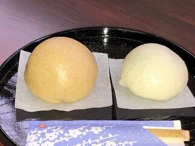２EFGの家庭基礎研究を受講している生徒さんたちが、今日はお饅頭を作って来てくれました。いつもありがとうございます。きめ細かくしっとりした餡と皮のほんのりした甘さとのバランスが絶妙で出来栄えは、すばらしいものでした。よく見るとおまんじゅうはそのフォルムがシンプルでかわいらしいですね。生徒さんの作品のすばらしさが伝わる表現と写真が撮れているか心配ですが感謝を込めて今回も載せさていただきました。
21世紀枠への感謝
先週14日金曜日に来春の第91回センバツ高校野球大会に出場する21世紀枠の各地区候補９校が発表されました。千葉県が所属する関東・東京地区からは、石岡一（茨城県）が選出されました。今回、本校は選外となりましたが、千葉県の代表として推薦していただいたこと、また、本件についてご支援・ご声援いただいた皆様に改めて感謝申し上げます。
15日付けのスポーツ報知の紙面でもこの件に関して記事が掲載されました。そこには、野球部の和田宗矩主将から「自分たちが活躍することで、長嶋さんに元気になってもらいたい。甲子園に出て、長嶋さんに応援に来ていただきたいです。」との来夏の目標に対するコメントが載せられていました。本校生徒が様々な目標を立てる上で、人のため社会のためになることを意識して自分の目標をしっかりと持っていることに頼もしさと誇りを感じました。皆さんと夢の実現に向けてひとつひとつ頑張っていきたいと思います。
15日付けのスポーツ報知の紙面でもこの件に関して記事が掲載されました。そこには、野球部の和田宗矩主将から「自分たちが活躍することで、長嶋さんに元気になってもらいたい。甲子園に出て、長嶋さんに応援に来ていただきたいです。」との来夏の目標に対するコメントが載せられていました。本校生徒が様々な目標を立てる上で、人のため社会のためになることを意識して自分の目標をしっかりと持っていることに頼もしさと誇りを感じました。皆さんと夢の実現に向けてひとつひとつ頑張っていきたいと思います。
気持ちの良い朝
久しぶりに晴れて気持ちの良い朝を迎えました。昨日のニュースでも南関東では日照不足が心配されています。日光や紫外線は、心や身体の健康管理にとても大切です。例えば、感情のバランスを調整する働きや体内時計の調整の働き持つ神経伝達物質のセロトニンや血中のカルシウム代謝を正常化させる働きを持つビタミンDの生成などに密接な関係があります。今日のように朝日を浴びて気持ち良いと感じるのもこんなことにも関係しているのかもしれませんね。
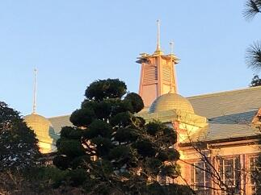
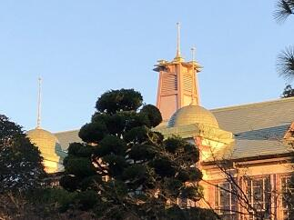
星に願いを2018
今年も「三大流星群」の一つの「ふたご座流星群」を観察できる時期になっています。国立天文台によると、特に多くの流星を見ることができるのは、今日13日の夜と14日の夜の２夜で、今年のふたご座流星群の活動が最も活発になるのは、12月14日21時頃と予想されています。天気予報では13日、14日とも夜は晴れで観察には大変良いようです。観察には月明りが気になりますが月が上弦のため夜半頃には沈み（千葉県では13日が21:40、14日が22:36）、その後はたいへん良い条件で流星を観察することができるでしょう。いずれの夜も、20時頃から流星が出現し始め、夜明け前まで出現が続くそうです。空の暗い場所で観察したときに見える流星の数は、最も多いときで1時間あたり40個程度と予想されるということです。楽しみですね。
さて、あなたは流れ星に何を願いますか。
さて、あなたは流れ星に何を願いますか。
初氷
今日は、また一段と寒さが厳しくなりました。(早朝の気温は１℃でした。)天気予報では午後から、冬将軍の影響で北関東から東京にかけて雪やみぞれが予想されています。
この季節は空気の乾燥や、急激な温度変化（暖かい室内から寒い室外への移動時など）への対策をして、風邪・インフルエンザなどにかからないように健康管理に注意していきましょう。
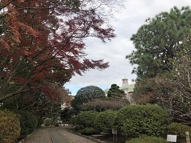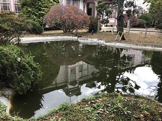
本校では、外の水たまりに今年初めて氷が張りました。（写真左は紅葉を取り込んだ初氷）庭の景色は、あんなに美しかった紅葉も一部を除いて冬枯れの佇まいとなり（写真中央）、東郷池（写真右は校舎が映る東郷池）の鯉たちは、最近はすっかり活動が鈍くなり水面近くに姿を見せなくなりました。自然は私たちに秋を惜しみつつも確実に冬の装いを見せ始めています。
この季節は空気の乾燥や、急激な温度変化（暖かい室内から寒い室外への移動時など）への対策をして、風邪・インフルエンザなどにかからないように健康管理に注意していきましょう。
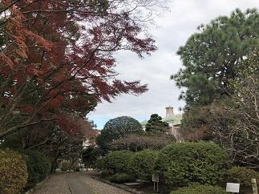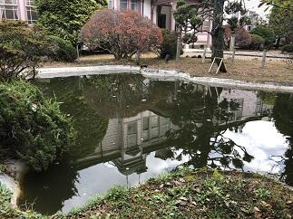
本校では、外の水たまりに今年初めて氷が張りました。（写真左は紅葉を取り込んだ初氷）庭の景色は、あんなに美しかった紅葉も一部を除いて冬枯れの佇まいとなり（写真中央）、東郷池（写真右は校舎が映る東郷池）の鯉たちは、最近はすっかり活動が鈍くなり水面近くに姿を見せなくなりました。自然は私たちに秋を惜しみつつも確実に冬の装いを見せ始めています。
落葉舞い散る東郷池
いよいよ、紅葉が落葉になって地面や水面を美しく彩る季節となりました。見上げていた視線を足元に落として、その美しさに感動する一方で、掃除をする大変さに思いがめぐります。自然のなかで、たとえば山のなかに生える紅葉の落葉であれば、自然の食物連鎖のサイクルに任せておけば有効に活用されるので、いちいち掃除などしません。ところが、これが庭に生える樹木からの落葉となると、庭を落葉だらけにしておく訳にもいかず毎日掃除をするわけです。しかも、この季節はいったん綺麗に掃除しても、ひと風吹けばまた元通りという恐怖の体験を何度もする時期なのです。
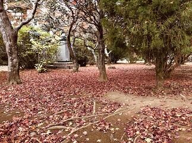
写真のとおり東郷池も同じ状況です。落葉の下を鯉が優雅に泳ぐ姿も一興かもしれませんが、これも鯉が見えればの話ですね。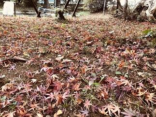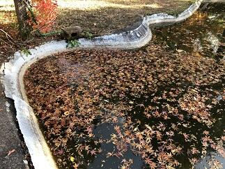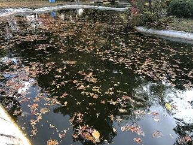
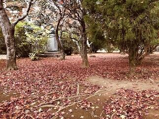
写真のとおり東郷池も同じ状況です。落葉の下を鯉が優雅に泳ぐ姿も一興かもしれませんが、これも鯉が見えればの話ですね。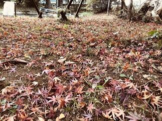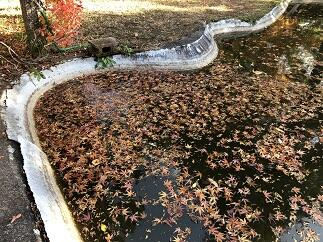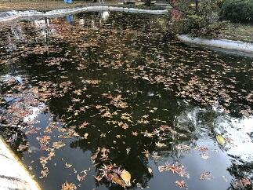
第４回定期考査
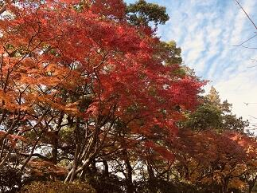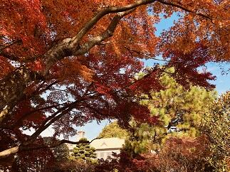本日12月４日から７日までの４日間で第４回の定期考査が行われます。気温の変化や天候不順により体調を崩しやすい時期です。まずは、健康管理をしっかりして普段の実力を発揮できるようにしましょう。頑張ってください。(写真は晩秋の木々)